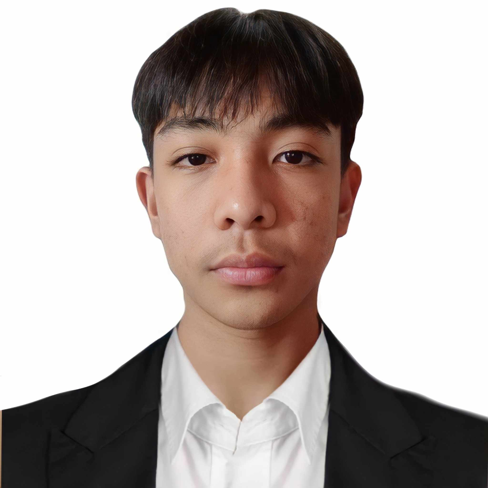

JHOMAR GEROLA
Graphic Designer
CONTACTS
09346753245
gerolajhomar@gmail.com
Fabrica, Bulan, Sorsogon
SKILLS
- Adobe InDesign
- Adobe After Effects
- Adobe Illustrator
- Adobe Photoshop
AWARDS
- 1st Place, 6th Regional Patiribayan - Graphics Design Competition | 2025
- 3rd Place, CICT Student Congress-Logo Design Contest | 2025
- 5th Place, National Collegiate Graphics Design Competition | 2024
- 1st Place, Kasanggayahan IT Skills Olympics 2024-Graphic Design Competition for Sorsogon Tourism Advertisement | 2024
INTERESTS
- Video Games
- Photography
- Pastry Production
I am a talented, ambitious, and hardworking individual with broad skills and expertise in digital marketing, social media, and leading projects. I am dynamic and innovative in handling several simultaneous creative design projects, concept creation, and visual presentations.
- Tertiary Education
Sorsogon State University – Bulan Campus | Bachelor of Science in Information Technology | 2022-2026
Junior Graphic Designer | MoonFlora Corporation | 2027-2029
- Developed company flyers which increased response by 4%.
- Designed the company's annual catalogs and campaign materials.
Graphic Design Intern | YourLine Publishing Inc. | 2026-2027
- Redesigned the company's best-selling books which increased reader's interest by 40%.
- Designed the company's magazine covers which is displayed in various stores across the Philippines.
- Developed graphics and layouts for product illustrations and logo mirroring brand style.